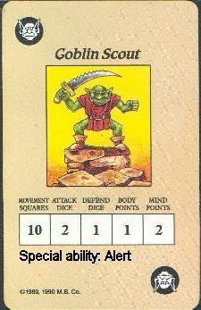

Goblin Scout
by The Scorpion

Download the Goblin Scout Monster Card (27K)
Goblin warrior: AAGGGH...A BARBARIAN
Grothar: puny goblins, this dungeon is below morcars usual chalenge for us
Grimdel: hmm barbarian, you have a point. i bet my beard something is going on
Goblin scout: HEEEELP HEEEEELP
Orc leader: WHAT IS GOING ON HERE
Grimdel: i'm not cutting off my beard barbarian
Special Abilities
Alert: This ability can only be used once if the goblin starts a turn out of the line of sight of the heros, he acts as if he had just cast summon orcs
Uses
the goblin scout is really a zargon tool. so if that the quest seems to
be too simple or easy for the heros zargon can place a goblin scout in
place of a goblin and run the figure away from the heroes quickly
Sugested miniature
Just use a goblin figure from heroquest or a Goblin from any miniature
company